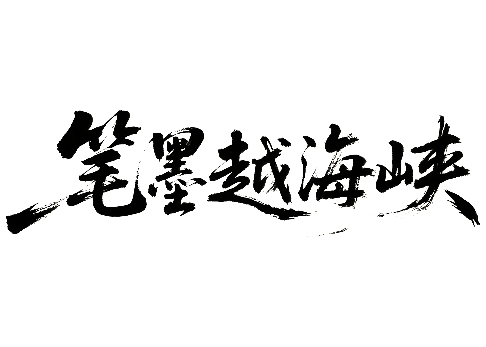
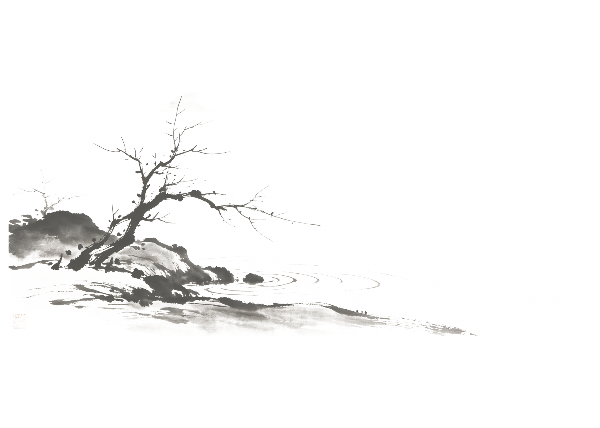

数据解码华文经典的彼岸之旅

—— 从数据看大陆文学在台传播之旅 ——
在时间的长河中，经典的文学符号正在彼岸重新演绎与回响
滑动卷轴 —— 见证奇迹

【 卷 首 】
张爱玲、鲁迅、莫言、余华、沈从文、刘慈欣、王安忆……这些大陆近现代与当代作家，并没有仅仅停留在文学史的课本里。
在海峡对岸的时间长河中，他们被反复提起、引用、纪念、改编，也被重新解释。张爱玲成为台湾最热切拥抱的文学符号——尽管她"从未住过台湾，没写过台湾"；鲁迅历经禁忌与回归，至今仍是公共批判的精神资源；莫言凭诺贝尔奖让台湾媒体头版报道，余华《活着》与刘慈欣《三体》登上博客来年度畅销榜。
我们尝试从长达数十年的出版数据、学术论文与媒体报道出发，重新阅读这些跨过海峡的作家与作品。时间的涟漪与同根的低语，一圈圈一遍遍画出一道桥……
【 第 一 章 】
跨越海峡的文学共鸣 —— 历经二十载的书卷长歌
过去六十余年的传播数据表明：大陆近现代与当代作家并没有在彼岸的话语体系中集体沉默。从张爱玲138篇台湾硕博论文，到莫言30余种在台出版物，从鲁迅重新进入国文课本，到《三体》因Netflix改编而销量激增——文学的河流，不识岸，只识流。
【数据维度 —— 聚点成林】
在过去二十年的叙事图景中，大陆近现代经典作家的影响力如同不灭星辰，跨代际流动。
—— 双击或点击光点，打开作家详细卷轴 ——
* 数据来源：台湾报刊数据库（1970-2024）、台湾硕博论文网（NDLTD）、诚品/博客来年度畅销榜、台北国际书展出版交流数据。详见文末「数据溯源」。
【 第 二 章 】
多元场域下的阐释与隐喻 —— 从碎片中重筑丰盈
【镜中阐释 —— 标签重塑】
在不同传播场域下，报道与评论对作家作品进行了选择性的重点阐释。
* 数据来源：梁慕灵《想像与形塑》（2022）对1943-2016年台湾报刊651条相关报道的标签分类，及两岸文学比较研究论文词频统计
【灵魂回响 —— 镜面折射】
当一个复杂的文学灵魂在传播中被提炼为单一的标签时，理解的入口就变窄了。点击卡片，听听他们在标签背后，传来的真正声音。
【 第 三 章 】
字里藏着一条河 —— 汇聚华文情感的共同经验
【相邻彼岸 —— 共同经验】
点击中心的主题圆点，探索大陆作家与经典文学作品如何在相同的文学母题下紧密相连。这不是孤立的声音，而是一条由共同经验汇聚成的江河。
【字里江河 —— 回环落笔】
一个台湾小学生作文本上的汉字，搭起了一座无形的渡海拱桥。点击作文纸可展开阅读。
让我们回到开篇那张作文纸。它属于一个台湾小学生小林。她的书包里放着一本翻旧了的《边城》——那是大陆作家沈从文写的。妈妈在她八岁那年送给她，扉页上写着："这是一条会流到心里去的河。"她读了不知多少遍。她不懂什么叫"湘西"，不懂什么叫"船夫"，不懂翠翠为什么等不到那个人回来。但她懂那条河——书上说："小溪流下去，绕山岨流去了许多里路，便汇入那条大河。"她每次读到这一句，她的脑海里就会浮起一条弯弯曲曲的小河，水声潺潺，像在说话。
在一次作文课上，老师让大家写"文字里有什么"。小林一下子就想到了那座神秘小城，那条她想象无数遍的小河。她决定要把那个地方写出来，她在格子里一笔一划写下：「字裡藏著一條河」。
她盯着这几个字看了很久。然后低下头，在正文的第一行，写下了沈从文《边城》里的那句话：
"水是各处可流的，火是各处可烧的，月亮是各处可照的，爱情是各处可到的。"
"字裡藏著一條河。"
写的人在此岸，读的人在彼岸。
当他们合上作文本时，海峡还在。但纸上的那条河，早已悄无声息地，在几代人的字里行间，缓缓流淌过去了……